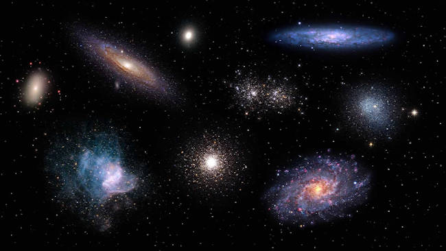

Tudo o que você quer aprender sobre o universo em um único lugar
O Universo
O Universo é tudo o que existe fisicamente, a soma do espaço e do tempo e as mais variadas formas de matéria, como planetas, estrelas, galáxias e os componentes do espaço intergaláctico. Vamos começar dizendo que o universo é grande. Estima-se que, se olharmos em qualquer direção, suas regiões visíveis mais distantes estão a cerca de 46 bilhões de anos-luz de distância. Isso significa ter um diâmetro de 540 sextilhões de milhas (ou 54 seguido por 22 zeros).
Na astronomia, o Universo corresponde ao conjunto de toda a matéria, energia, espaço e tempo existente. Ele reúne os astros: planetas, cometas, estrelas, galáxias, nebulosas, satélites, dentre outros. O universo é, portanto, mais que um local imenso, ele é tudo, e engloba tudo o que existe. Para muitos, infinito.
Gálaxias
As galáxias são conjuntos de estrelas, poeira, gases e matéria escura que formam o Universo. Como podemos observar na imagem abaixo elas podem ser elípticas, espirais, como a Via Láctea, ou possuir forma irregular. Galáxia do Triângulo ou Messier 33. As galáxias são sistemas formados por milhares a trilhões de estrelas, poeira, gases e matéria escura. A maioria das galáxias surgiu um pouco depois da formação do universo. Os cientistas acreditam que elas tenham, em média, entre 10 e 13,6 bilhões de anos! A galáxia mais nova de que se tem notícia nasceu há cerca de 500 milhões de anos. As estrelas são um dos corpos celestes que compõem as galáxias.

Estrelas
As estrelas são grandes esferas formadas por plasma aquecido a milhares de graus. Seu formato deve-se à sua gravidade, que aponta em direção ao núcleo da estrela. As estrelas são grandes esferas de plasma que são alimentadas pela fusão nuclear. Estrelas são grandes esferas de plasma, mantidas por sua própria gravidade. Existem 6 tipos de estrelas: anãs brancas, anãs marrons, gigantes vermelhas, supergigantes azuis, estrelas de nêutrons e estrelas variáveis. O tempo de vida de uma estrela está diretamente relacionado à sua massa. "As de massa bem maiores que a do Sol, cerca de dez vezes maiores, por exemplo, vão durar dezenas de milhões de anos, enquanto o tempo de vida do astro solar é de 10 bilhões de anos.